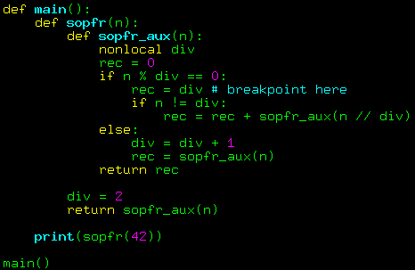
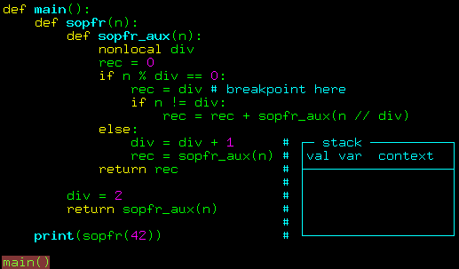
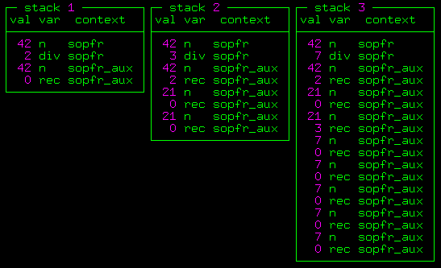
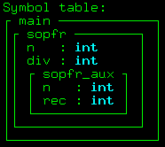
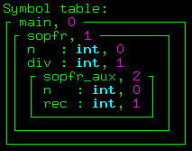
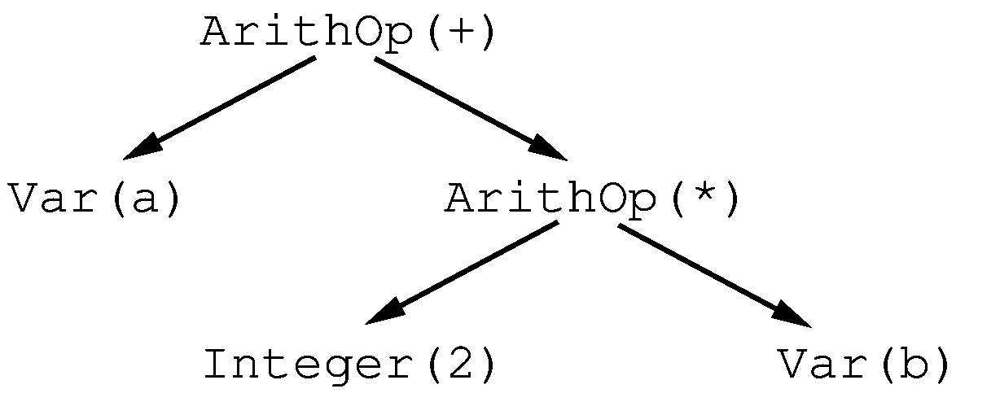

Displays
Introduction
A question from the realm of abnormal programming: how complex of a program can you write in python without using variables (or function arguments) at all, except for a couple of global arrays? The correct answer: anything. If something can be done in assembly, then it can certainly be done in python!
Despite the fact that tinycompiler targets GNU assembly, I'm not crazy enough to dive into assembly directly. I am getting to assembly pretty gradually: I started by translating wend sources into full-blown python, and now I am reducing the set of features I am allowed to use. The topic of today's discussion: generating python code without using variables.
Recursion for Beginners
The factorial of a positive integer \(n\) is the product of all positive integers less than or equal to \(n\). For example, the factorial of 7 is \(7*6*5*4*3*2*1\), which equals 5040. The factorial of \(n\) is written as \(n!\), and the task of computing it is obviously reduced to computing \((n-1)!\), namely, \(n! = n * (n - 1)!\)
A recursive implementation naturally comes to the mind:
ssloy@khronos:~$ python3 <<<'
def factorial(n):
result = 1
if n > 1:
result = n * factorial(n-1)
return result
print(factorial(7))
'
5040
This kind of code is often the starting point for learning programming, but explanations of how exactly the machine executes it are usually left out. The main tool in this program is the function call, but how does it work?
A typical (not the only possible, but typical) way for implementing a function call is based on saving the function's arguments and local variables on the stack:
- At the call point, the parameters passed to the function are placed on the stack (plus usually the return address for the instruction pointer).
- The called function places its own local variables on the stack during execution.
- Upon completion, the function clears the stack of its local variables, and writes the result (usually in one of the processor's registers or again in some place reserved on the stack by the caller).
- The return instruction jumps to the return address. Either immediately before or right after returning from the function, the stack is cleared of the function's arguments.
It is easy to see that the need to grow the stack is dictated by the requirement to restore the state of the calling function instance (i.e., its parameters, local data, and return address) after the called function finishes execution.
Thus, with each recursive function call, a new set of its parameters and local variables is created, which, along with the return address, is placed on the stack. To avoid being theoretical and to be more practical, let's add one line of introspection to our factorial:
With each call to factorial(n), the line I added traverses the stack and prints all instances of the variable n that it finds.
To compute 7!, the factorial(n) function is called 7 times, and it is easy to see that at some point, the machine stores all 7 instances of the variable.
Of course, the same is true for the variable result.
The main idea of this article
Python does a lot of work for us, but that doesn't mean we can't manage without its help. Assembly doesn't provide the luxury of automatic argument passing; we have to deal with the stack. I propose to continue using python as the target language but to reduce the used capabilities to the level of assembly: in fact, we will be writing in assembly with python syntax. This approach has two advantages:
-
We don't have to strictly follow all the constraints at once. For example, I can limit the ability to pass arguments to functions but don't have to immediately jump into a world with four registers. I can still use python's expression parser, writing a comfortable
5//-3if needed, instead of fiddling with all the required registers and necessary flags. Thus, at all times, I can have a working compiler and refine it gradually. -
Additionally, we don't have to dive headfirst into an unfriendly world where even a simple print() often doesn't work, and debugging assembly is a whole different story. We can use our favorite IDE, set breakpoints, print anything to the screen, and comfortably modify the generated code by hand to understand what went wrong.
We don't have to use python's built-in stack; we can emulate its behavior with a custom stack.
Let's create a global array stack and store the arguments and local variables of functions in it.
Then the factorial can be rewritten (by hand!) as follows:
ssloy@khronos:~$ python3 <<<'
def factorial(): # n is stack[-1]
stack.append(1)
if stack[-2] > 1: # n is stack[-2], result is stack[-1]
stack.append(stack[-2]-1)
stack[-2] = stack[-3] * factorial() # n is stack[-3], result is stack[-2]
stack.pop()
return stack.pop()
stack = []
stack.append(7)
print(factorial())
stack.pop()
'
5040
In this code, we no longer use python variables at all, except for a single array stack.
This program closely resembles what I want to achieve automatically with my compiler, and the transition from the previous code to this one is the main idea of the article.
Put down your cup of tea, look at the code carefully, and if necessary, draw the stack on paper.
I wrote the code by hand, and I don't particularly like that I had to manually track the position of variables on the stack.
To refer to the same variable n, I had to use three different expressions stack[-1], stack[-2], and stack[-3].
This is not very good, and we need to find a more robust method.
It's time to recall the symbol tables from the previous article.
Test Case
Let's put aside the factorial and consider the simplest nontrivial example with several different function calls. On the left, you see the original code in wend, and on the right, its translation into python using version v0.0.3 of my compiler. This version was described in the previous article on symbol tables. The task at hand is to rewrite the right part by hand without using variables, much like I did with the factorial.
{kind=link}
If the code in the picture is too hard to read, let me provide it as plain text:
sopfr.wend
sopfr.py
This program computes the sum of prime factors for a given number. For example, \(20 = 5*2*2\), so \(\mathrm{sopfr}(20) = 2 + 2 + 5 = 9\). This function is often called the integer logarithm, which is not surprising since it is quite evident that \(\mathrm{sopfr}(a * b) = \mathrm{sopfr}(a) + \mathrm{sopfr}(b)\). Mathematicians actively study the properties of this function, but that is somewhat beyond our discussion :)
In this code, I am interested in several things:
- We have three nested scopes.
- We have functions with different numbers of arguments and different numbers of local functions.
- We have a reference to a non-local variable
divfrom the functionsopfr_aux.
The last point is of particular interest.
Let's recall that in the factorial example, I had to manually track the position of local variables on the stack, whose size evolved.
This is unpleasant but not too bad, as all stack changes within a function are known at compile time: initially, I refer to the variable n as stack[-1],
and after adding the local variable result, the stack grows, and n becomes the second-to-last element stack[-2].
But what to do when the stack changes at runtime? This happens quite regularly.
Exercise 1
Let's return to our test case of computing sopfr(n). Set a breakpoint on the line rec = div:

42 decomposes into the factors 2, 3, and 7, meaning the interpreter should pass through this line three times. Take a piece of paper and a pencil, and draw the stack state at each of the three passes (I am interested only in variables, no need for addresses).
Let me help with the first breakpoint.
The main() function places 42 on the stack, which corresponds to the variable n in the sopfr(n) function.
It, in turn, places 2 on the stack (variable div), and then places 42 again (argument for the sopfr_aux(n) function).
Then sopfr_aux creates a local variable rec, placing 0 on the stack, and reaches the breakpoint because 42 is divisible by 2.
Thus, when we reach the breakpoint for the first time, the stack will look like this: [42, 2, 42, 0].
Here is a small animation of the process:

Now, take a break from the article and try drawing the stack for the second and third breakpoints. The task is trivial, but I bet many will make mistakes. If anyone made a mistake, don't hesitate to comment :)
Question

Don't be surprised, this is a perfectly normal answer. Here, I added a bit of code introspection to check the result:
Proof
ssloy@khronos:~$ python3 <<<'
import inspect
def main():
def sopfr(n):
def sopfr_aux(n):
nonlocal div
rec = 0
if n % div == 0:
# breakpoint, print stack
var = {"main":[], "sopfr":["n","div"], "sopfr_aux":["n","rec"]}
print([frame[0].f_locals[name] for frame in reversed(inspect.stack()[:-1]) for name in var[frame[3]]])
rec = div
if n != div:
rec = rec + sopfr_aux(n // div)
else:
div = div + 1
rec = sopfr_aux(n)
return rec
div = 2
return sopfr_aux(n)
print(sopfr(42))
main()
'
[42, 2, 42, 0]
[42, 3, 42, 2, 21, 0, 21, 0]
[42, 7, 42, 2, 21, 0, 21, 3, 7, 0, 7, 0, 7, 0, 7, 0, 7, 0]
12
Symbol Tables to the Rescue
When I rewrote the factorial in assembly-like Python, I accessed variables simply by their offset from the top of the stack, and even for a local variable, this offset was not the same for different lines, but at least it was known at compile time.
Here, things are quite different.
When we reach our breakpoint, we want to assign div to rec: one variable is local, and the other is non-local and very deeply buried in the stack; the depth is unknown at compile time.
On the other hand... Let's take a look at the symbol table for our program:

We have three nested variable scopes: main, sopfr, sopfr_aux.
There are no variables in the main function, sopfr has two integer variables n and div, and sopfr_aux has two integer variables n and rec.
Until now, my compiler accessed variables by their names, but now it's time to number them and forget about the identifiers. Here is the diff of the commit, in which I simply added counters for scopes and variables within each scope. In fact, I added these purple numbers to the symbol table:

Now, when I want to access the variable div, I don't need its identifier; I only need to know that it is variable number 1 in scope 1, i.e., a pair of numbers is sufficient for identification.
Now we have everything we need to eliminate variables for sopfr, which is considerably more complex than the factorial example.
Remember, I am still writing the code by hand; I need this to understand how my compiler will work.
Here is the code as an image:
{kind=link}
And here it is as text:
sopfr-no-variables.py
ssloy@khronos:~$ python3 <<<'
def main():
def sopfr():
def sopfr_aux():
global display,stack,eax
stack += [None]*1 # allocate memory for one local variable rec
stack += [display[2]] # save old frame pointer
display[2] = len(stack)-3 # frame pointer for sopfr_aux()
stack[display[2]+1] = 0 # rec = 0
if stack[display[2]+0] % stack[display[1]+1] == 0: # if n % div == 0
print(display,stack) # BREAKPOINT!
stack[display[2]+1] = stack[display[1]+1] # rec = div
if stack[display[2]+0] != stack[display[1]+1]: # if n != div
stack += [stack[display[2]+0]//stack[display[1]+1]] # push n/div ┐
sopfr_aux() # > sopfr_aux(n/div)
del stack[-1:] # pop n/div ┘
stack[display[2]+1] = stack[display[2]+1] + eax
else:
stack[display[1]+1] = stack[display[1]+1] + 1
stack +=[stack[display[2]+0]] # push n ┐
sopfr_aux() # > sopfr_aux(n) call
del stack[-1:] # pop n ┘
stack[display[2]+1] = eax
eax = stack[display[2]+1]
display[2] = stack.pop() # restore frame pointer
del stack[-1:] # remove rec from stack
global display,stack,eax
stack += [None]*1 # allocate memory for one local variable div
stack += [display[1]] # save old frame pointer
display[1] = len(stack)-3 # frame pointer for sopfr()
stack[display[1]+1] = 2 # div = 2
stack += [stack[display[1]+0]] # push n ┐
sopfr_aux() # > sopfr_aux(n)
del stack[-1:] # pop n ┘
display[1] = stack.pop() # restore frame pointer
del stack[-1:] # remove div from stack
global display,stack,eax
stack += [None]*0 # no local variables
stack += [display[0]] # save old frame pointer
display[0] = len(stack)-1 # frame pointer for main()
stack += [42] # push 42 ┐
sopfr() # > sopfr(42)
del stack[-1:] # pop 42 ┘
print(eax)
display[0] = stack.pop() # restore frame pointer
display = [ None ]*3 # uninitialized frame pointers
stack = [] # empty stack
eax = None # registers
main()
'
[0, 1, 4] [None, 42, 2, None, 42, 0, None]
[0, 1, 10] [None, 42, 3, None, 42, 2, None, 21, 0, 4, 21, 0, 7]
[0, 1, 25] [None, 42, 7, None, 42, 2, None, 21, 0, 4, 21, 3, 7, 7, 0, 10, 7, 0, 13, 7, 0, 16, 7, 0, 19, 7, 0, 22]
12
At first glance, it looks intimidating, but in reality, it's not that complicated.
Let's break down what is happening here.
First and foremost, let's look at the new global variables.
We now have not only stack, but also an array display and a variable eax.
The stack's role remains unchanged, the variable eax emulates a processor register, and according to the x86 function call convention, I will place the return value of functions in this "register."
The global array display is more interesting.
Notice that it is not empty.
This array will not change its size; the number of its cells equals the number of different scopes in our symbol table, in this case, 3.
The idea is that with each function call, we will record the stack size in the corresponding cell,
allowing us to access the variable div as stack[display[1]+1] and the variable rec as stack[display[2]+1].
This technique completely removes runtime dependency; each variable is always identified by the same, constant pair of numbers that we simply take from the symbol table.
Of course, when calling a function, we will need to save the old value of display (on the stack, where else?) and restore it upon completion.
Thus, the body of any function with nlocals local variables and nargs parameters will look as follows:
def foo():
global display,stack,eax
stack += [None]*nlocals # reserve place for local variables
stack += [display[scope]] # save old frame pointer
display[scope] = len(stack)-nlocals-nargs-1 # set new frame pointer for foo()
... # function body
display[scope] = stack.pop() # restore old frame pointer
eax = ... # return value
if nlocals>0: # remove local variables from stack
del stack[-nlocals:]
And here is a procedure for a function call:
- Push
nargsvalues onto the stack, - Call the function,
- Remove
nargsvalues from the stack.
I didn't randomly pick sopfr for nothing, I spent an entire day choosing an example.
I like it because it remains manageable for by-hand manipulation, but at the same it has as three different functions, each with a different number of parameters, a different number of local variables, and even a non-local variable.
Thus, it has three function bodies and even more different calls, allowing you to see that they are all formatted exactly the same way, using only the information available from the symbol table.
Exercise 2
We have rewritten the code, but its structure hasn't changed.
Let's leave the breakpoint exactly where it was before and, as an exercise, draw the state of display and stack all three times.
I won't hide the result this time; you won't remember the arrows right away anyway.
Don't cheat, draw the stack honestly; it will help you understand what and when we are saving.
Here is the answer:
{kind=link}
Final stretch: evaluating expressions
We are now very close to assembly-like python. The final touch is evaluating expressions. Let's imagine we have the following program:
Then in our symbol table, we will have one scope with identifier 0, and within it, there will be two variables with identifiers 0 and 1, respectively.
At this point, I am interested in how to evaluate the expression a+b*2.
In assembly, it will look something like this (reminder: in GNU assembler, the operators have the form op src dst):
mov display+0, %eax # find the frame of main() function
mov -1(%eax), %ebx # put b into ebx register
mov -0(%eax), %eax # put a into eax register
imul 2, %ebx # ebx = 2 * ebx
add %ebx, %eax # eax = eax + ebx
Here I cheated a bit: in order to put b into ebx, I had to spoil the value of eax, so I read the argument b first, and then a.
I also cleverly put the result of 2*ebx back into ebx...
And we must remember that registers are very limited, so for the expression a + b * 2 - foo(c - 3, d + 10*d, bar(a/4)), there will definitely not be enough registers.
But that's okay. Let's remember that we are writing a compiler, and the parser has built a syntax tree of the expression for us, which looks like this:

Then we can generate the code to evaluate the expression by traversing the tree depth-first, using the stack to store intermediate expressions.
Imagine we agree on a very simple rule: each node of the expression saves its value in the same register,
for example, %eax (by the way, a function call is also an expression, and in the sopfr example, the function call saved its result in %eax).
Then the only (recursive) operation to evaluate an expression can look like this (for simplicity, I am only talking about binary operations like arithmetic):
evaluate the left expression (result saved in %eax)
push(%eax)
evaluate the right expression (result saved in %eax)
move %eax to %ebx
%eax = pop()
%eax = binary operation on %eax and %ebx
Using this approach, the expression a+2*b can be evaluated with the following pseudocode:
move a to %eax \
push(%eax) |
move 2 to %eax \ |
push(%eax) | |
move b to %eax | 2*b saved in | a + 2*b saved in %eax
move %eax to %ebx | в %eax |
%eax = pop() | |
%eax = %eax * %ebx / |
move %eax to %ebx |
%eax = pop() |
%eax = %eax + %ebx /
Note that the code is clearly suboptimal; it is very easy to save a lot (in fact, the assembly code I provided earlier is much simpler and does not use the stack). But at this stage, I am not interested in optimization at all. I need to find a general pattern for evaluating expressions, and it seems that I have found it! We will talk about an optimizing compiler another time.
However, this approach has an undeniable advantage: it uses only two registers and the stack, nothing more!
So, the finishing touch on our sopfr: all expressions are evaluated in the eax register.
I still wrote the code by hand, but again, only to test the viability of the approach.
Behold the python assembly-ish code!
{kind=link}
And here it is as text:
assembly-ish python
ssloy@khronos:~$ python3 <<<'
def main():
def sopfr():
def sopfr_aux():
global display,stack,eax,ebx
stack += [None]*1 # allocate memory for one local variable rec
stack += [display[2]] # save old frame pointer
display[2] = len(stack)-3 # frame pointer for sopfr_aux()
eax = 0
stack[display[2]+1] = eax # rec = 0
eax = stack[display[2]+0] # n
stack += [eax] # stash left argument
eax = stack[display[1]+1] # div
ebx = eax # right argument
eax = stack.pop() # recall left arg
eax = eax % ebx # n % div
stack += [eax] # stash left argument
eax = 0
ebx = eax # right argument
eax = stack.pop() # recall left arg
eax = eax == ebx # n % div == 0
if eax: # if n % div == 0
print(display,stack) # BREAKPOINT!
eax = stack[display[1]+1] # div
stack[display[2]+1] = eax # rec = div
eax = stack[display[2]+0] # n
stack += [eax] # stash left argument
eax = stack[display[1]+1] # div
ebx = eax # right argument
eax = stack.pop() # recall left arg
eax = eax != ebx # n != div
if eax: # if n != div
eax = stack[display[2]+1] # rec
stack += [eax] # stash left argument
eax = stack[display[2]+0] # n
stack += [eax] # stash left argument
eax = stack[display[1]+1] # div
ebx = eax # right argument
eax = stack.pop() # recall left arg
eax = eax // ebx # n/div ┐
stack += [eax] # │ sopfr_aux(n/div)
sopfr_aux() # │
del stack[-1:] # pop n/div ┘
ebx = eax # right argument
eax = stack.pop() # recall left arg
eax = eax + ebx # rec + sopfr_aux(n/div)
stack[display[2]+1] = eax # rec = rec + sopfr_aux(n/div)
else:
eax = stack[display[1]+1] # div
stack += [eax] # stash left argument
eax = 1
ebx = eax # right argument
eax = stack.pop() # recall left arg
eax = eax + ebx # div + 1
stack[display[1]+1] = eax # div = div + 1
eax = stack[display[2]+0] # push n ┐
stack +=[eax] # │ sopfr_aux(n) call
sopfr_aux() # │
del stack[-1:] # pop n ┘
stack[display[2]+1] = eax
eax = stack[display[2]+1]
display[2] = stack.pop() # restore frame pointer
del stack[-1:] # remove rec from stack
global display,stack,eax,ebx
stack += [None]*1 # allocate memory for one local variable div
stack += [display[1]] # save old frame pointer
display[1] = len(stack)-3 # frame pointer for sopfr()
eax = 2
stack[display[1]+1] = eax # div = 2
eax = stack[display[1]+0] # push n ┐
stack += [eax] # │ sopfr_aux(n)
sopfr_aux() # │
del stack[-1:] # pop n ┘
display[1] = stack.pop() # restore frame pointer
del stack[-1:] # remove div from stack
global display,stack,eax,ebx
stack += [None]*0 # no local variables
stack += [display[0]] # save old frame pointer
display[0] = len(stack)-1 # frame pointer for main()
eax = 42 # push 42 ┐
stack += [eax] # │ sopfr(42)
sopfr() # │
del stack[-1:] # pop 42 ┘
print(eax)
display[0] = stack.pop() # restore frame pointer
display = [ None ]*3 # uninitialized frame pointers
stack = [] # empty stack
eax,ebx = None,None # registers
main()
'
[0, 1, 4] [None, 42, 2, None, 42, 0, None]
[0, 1, 11] [None, 42, 3, None, 42, 2, None, 2, 21, 0, 4, 21, 0, 8]
[0, 1, 27] [None, 42, 7, None, 42, 2, None, 2, 21, 0, 4, 21, 3, 8, 3, 7, 0, 11, 7, 0, 15, 7, 0, 18, 7, 0, 21, 7, 0, 24]
12
Summary
I reiterate, the most important thing in this code is the repeatability of the same patterns for function bodies, function calls, and expression evaluation. These patterns do not require much thought; which is perfect for automating the process.
Here you can see all the changes in the repository since the previous release; there are very few. The compiler version for testing is v0.0.4.
In the end, we (almost) do not use anything from python that assembly cannot handle directly. Virtually the only thing needed for assembly generation is to change the template for our pretty printer. We will talk about this next time!